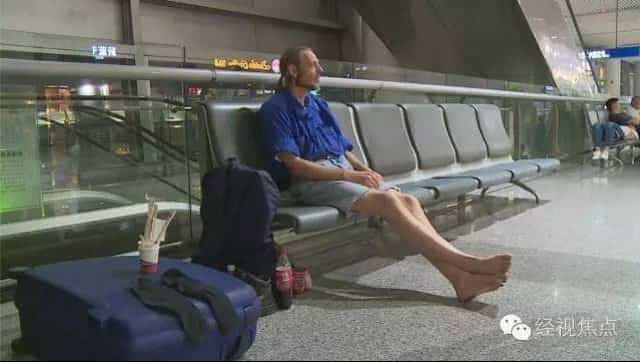

< < < Back
Dutchman Hospitalized After Waiting 10 Days In Chinese Airport For His Online “Girlfriend” – Return Of Kings
A 41-year-old Dutch man with diabetes has waited 10 days at an airport in Changsha, China for his online “girlfriend.” Alexander Pieter Cirk eventually required medical attention, including an IV drip, at a nearby hospital. The effects of sustained sleep deprivation, hunger, and his aggravated case of diabetes had put his health in serious jeopardy.
Meanwhile, Cirk’s “girlfriend,” surnamed Zhang, was apparently getting plastic surgery done in another city and claimed to have turned her phone off as he waited. She later cited “inconvenience” as the reason she could not visit him in the hospital.The Dutchman’s saga highlights the extent to which enough modern men are being driven to desperate measures to satiate their female-related thirst.
Cirk’s spending of a significant amount of money to buy a plane ticket to meet this evidently very mysterious woman is already bad. Yet his presence for ten days in a foreign airport in an authoritarian country notorious for its stringent treatment of those even coming close to falling afoul of entry laws is worse still. Regardless of any valid visa Cirk might have had, living in an airport for ten days could have easily landed him in prison. Plus, when you add the man’s serious medical condition into the mix, you have a truly epic case of pussy pedestalization.
He deserves your partial sympathy but also your brutal honesty
Did Cirk and/or other clueless Western men help pay for Zhang’s purported plastic surgery?
As an ROK writer, I am so accustomed to penning articles that excoriate some crazy feminist, another sort of SJW, or a white knight. In this instance, however, I genuinely feel sorry for Alexander Pieter Cirk. But I also want to smack him over the head perhaps a thousand times. Here we have a man who has either been forever oblivious to hard truths about women, or has chosen to ignore them. The truth probably lies in a combination of the two options.
The truly saddening aspects of this story are Cirk’s age and the fact that his generation faced only a fraction of the current ideological male-bashing as it grew up. If this member of Generation X does something like this, and lives in such female-derived desperation, we should anticipate the arrival of many more like him amongst the much younger Millennial male cohort. And, as weird as it sounds, their pussy pedestalization may lead to even more extreme measures than those taken by Cirk.
It is clear that red pill knowledge about women, not to mention something more substantial in the form of neomasculinity, is unknown to a huge number of men under 50. Cirk may be an outlier for what he is prepared to do to please just one woman, but plenty of other men are engaging in undeniably obsequious and self-destructive behaviors to try and land a mate. Despite the salience Return Of Kings has achieved in recent years, we have many, many more men to reach.
Cirk is also in danger of being misled in the future, like he has been so far. Why a young woman, particularly one so self-absorbed as to get plastic surgery, would have her phone turned off for ten days is about as big a mystery as what happened to Malaysian Airlines Flight 370 in the Indian Ocean. The foolishness of Cirk aside, it is unbelievable that she could not have texted him sooner to save him from himself, unless she really is the money-hungry manipulator of men almost any rational person would regard her as.
The BBC additionally reports that the woman Zhang is interested in maintaining their “relationship”. Of course she wants an ongoing relationship. Having spent ten days risking his life to wait for her, Cirk is even more malleable and pliable than he was in her eyes before. God knows what further misery Cirk will bring on himself financially, socially, legally, and emotionally in keeping links with this female.
An important note on online relationships
Not a substitute for real life or real skills.
Forget what the critics say: online communication, dating included, is an excellent way to find and vet women, especially for travels you make abroad. It enables you to expand your social network and avoid wasting time on the ground finding people you can do things with. Game honed by meeting new people for the first time in real life is massively important, but not your only tool.
Nonetheless, a problem emerges when you spend an inordinate amount of time chasing girls online, with little or no prospect of a return on your investment, let alone a guarantee. For very socially awkward men like Alexander Pieter Cirk, though, it is very easy to massively inflate one’s own chances. Loneliness and an exotic “opportunity” are simply too enticing for a growing number of well-intentioned but simultaneously greatly delusional men seeking to find “love” online. Internet-based courtship is no substitute for having real life skills, most notably when this courtship takes place on the kind of scam-associated matchmaking website Cirk is said to have “met” Zhang.
Cirk’s woeful experience in Changsha is a warning to all: being clueless is a disease and it will make you miserable. For the Dutchman, it nearly killed him. If the internet is your proverbial crutch to mask other deficiencies, beware. The same goes for any non-online clueless behaviors, such as paying for women to give you attention in the hope of getting a mere trinket like her name, phone number, a kiss on the cheek, or the chance of a future meeting.
Want to help your fellow men? Introduce them to Return Of Kings

Harsh truths need to be heard by men like Alexander Pieter Cirk. Whether they then embrace and use them is their choice.
Return Of Kings readers and contributors, and our proprietor Roosh most of all, have been hounded for their common sense, time-honored beliefs about women and fixing flawed male psychologies. That work continues and a lot of men are in positions of hopelessness at least roughly similar to Alexander Pieter Cirk’s. We may not be able to save people, but we can point them in the right direction and let them help themselves with a new outlook.
You may be far from the desperate case represented by Cirk. That said, the time is ripe to take stock of your own potential weaknesses as you help others. Is chasing girls at least moderately damaging your work or study lives? You have a bad enough case of thirst. Are you breaking your own code to satisfy a woman’s wants? You have a bad enough case of thirst. You put yourself in the best state to assist your fellow man when you start to iron out your own problems first, remember.
At the end of the day, real men don’t wait ten days in an airport for a foreign woman they’ve never met.
Read More: Do Your Part To Stop The Thirsty Guy Revolution